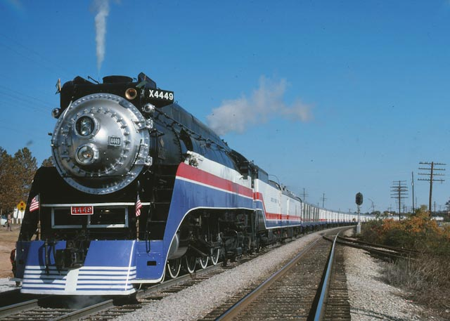

Bringing Others Onboard

Image by 4449.com.
Having people pitch in to help is one of the most important factors of this entire mission. If we are to get the American Freedom Train back on the rails,
we need to have the support of many Americans in order to convince the leaders of our nation to let this event become a reality again. Because
of this, we need your help with spreading this information to other individuals online.
There are several ways that you can help spread this information to your friends and other individuals:
- Foward this website to other individuals. This will help spread the information concerning our endeavors to bring the Freedom Train
back. This can be very affective since individuals have different friendship circles, which have individuals with their own friendship circles. Because of
this, this information can reach people quite effectively.
- Foward our social media pages to your state's governor. Unless we have the support of all of the main states of America, we will not be able
to generate enough interest in order to bring this dream to fruition. Because of this, if you foward our social media pages to your state's governor, there
is the chance that they will be willing to help us with our endeavors.
Thank you for being willing to help us out with our endeavors. We are looking foward to seeing the end results of our endeavors. But for now,
let's work on getting that Freedom Train back on track!